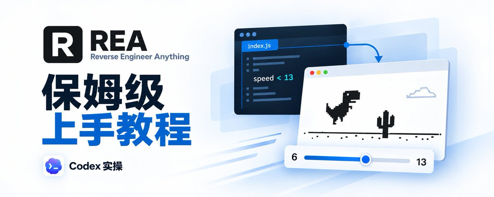
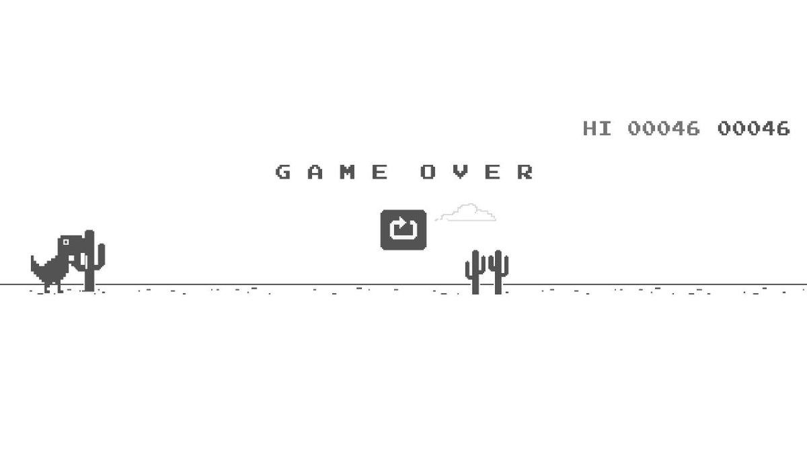
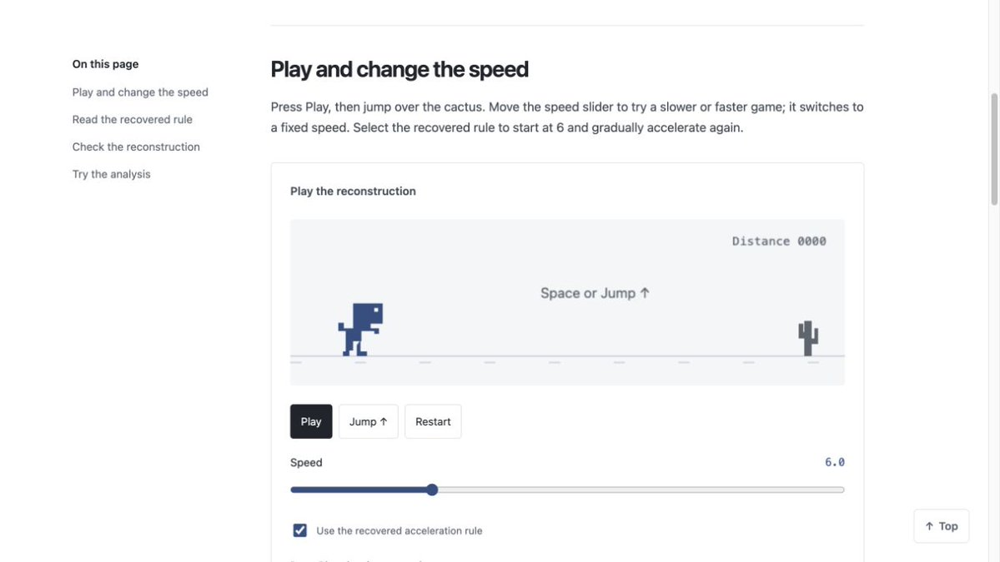
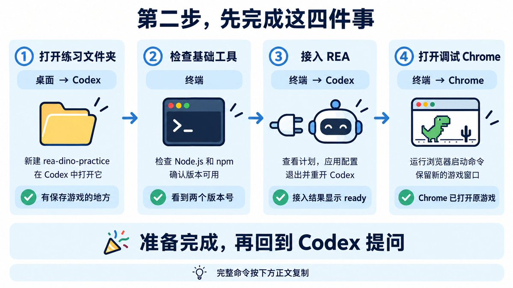
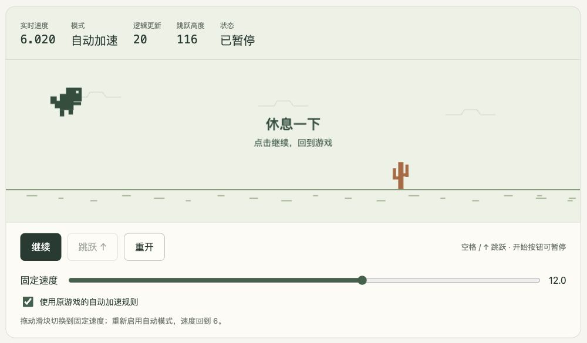
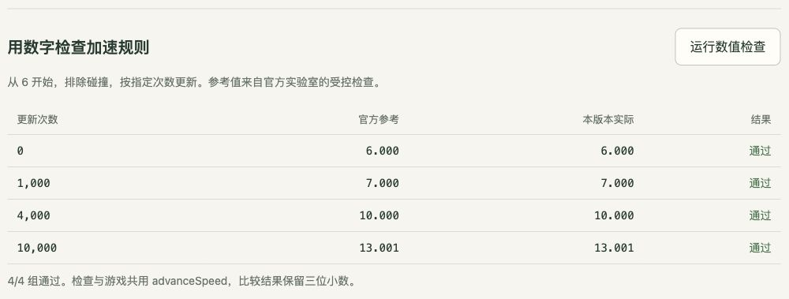
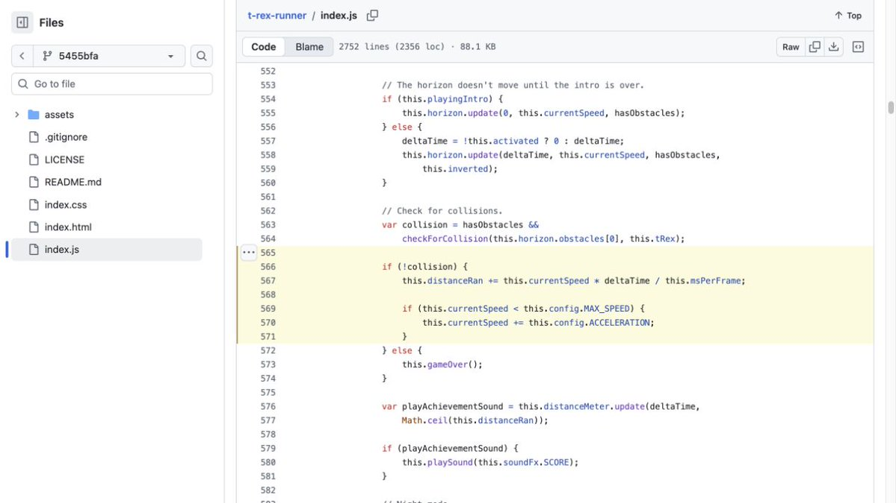
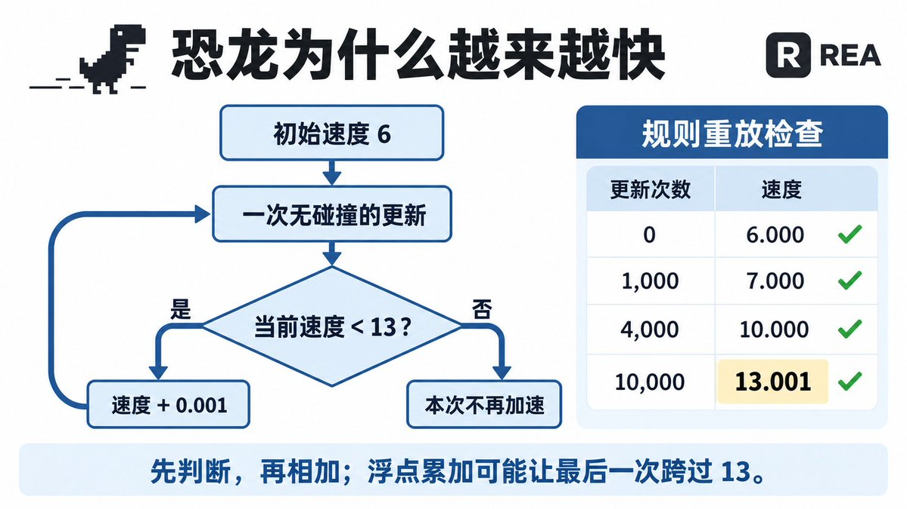

蓝哥 picks · 9/9
REA 保姆级上手教程: Codex 实操官方案例
@0xlangeai · 蓝哥AI · Mon Oct 12 07:20:54 +0000 2026

GitHub (a site for storing and sharing code) 日榜统计窗口，Rea 新增两万多颗 Star。最近的关注度，已经到了火爆的程度。
REA，全称 Reverse Engineer Anything，是一个给 Codex、Claude Code 等 AI 编程助手使用的开源逆向分析工具。逆向分析可以理解为：从一个现成软件的程序和运行行为出发，查清某个功能是怎样实现的。
它可以研究网页、桌面应用和二进制程序。你看到一个喜欢的功能，可以让 Agent 用 REA 读取相关程序、追踪处理过程，给出有出处的解释，再尝试为自己的项目做出类似版本。分析结果会记录依据和限制，方便继续核对。REA 官方介绍
比如，官方的 Notion (a notes and database app) 案例研究复制内容怎样进入系统剪贴板；Windows 计算器案例研究百分号按钮为什么会把 200 + 10% 算成 220。它的价值，是把“看懂现有功能”和“动手做一个版本”接到同一次 Agent (an AI that takes steps on its own to finish a task) 工作里。
截至目前，REA 有 12万+ 颗 Star，同期日榜显示新增 25,599 颗 Star。Star 可以理解为用户给项目点的收藏；这里的新增按日榜统计窗口计算。项目地址、GitHub 日榜
这篇讲的恐龙小游戏逆向跟练：查清障碍物为什么越来越快，再做一个能自己调速度的版本。REA 读取原游戏程序，Codex 解释规则、编写新游戏，你负责提问题、打开结果和亲手试玩。
跟着这篇做完，你会得到一个自己的网页小游戏：恐龙能跳，仙人掌会来，拖动滑块就能改变速度。
先看这张图，认清谁负责什么：你提问题、试玩结果；Codex 解释规则、写新游戏；REA 帮它读取游戏背后的程序；Chrome 把原游戏运行起来。图里的连接地址，会在第二步用到。
不用手写游戏代码。准备工具时会用到几段命令，后面则主要像聊天一样，把需求发给 Codex。每一步都会说明内容贴在哪里、做完要看到什么。
先记住这五步，后面的编号一一对应：
- 玩一局：看看原游戏，再体验一下最后想做出的效果。
- 接好工具：给 Codex 接上 REA，再打开一个供分析用的 Chrome 窗口。
- 问清规则：告诉 Codex，“查一下这个游戏为什么越来越快”。
- 做自己的版本：让 Codex 写一个带速度滑块的游戏，打开试玩。
- 核对结果：试按钮、试滑块，再让 Codex 检查有没有算对。
本文只提供 Mac 命令，浏览器页面发现和程序读取已在 Mac 上实测，使用 REA 6.4.0。Windows、Linux 读者可参考思路，环境配置和命令请自行适配。
开始前，先确认 Mac 上有 Google Chrome，以及已经登录、能正常对话的 Codex 桌面端。还没用过 Codex，可以先完成官方桌面端入门，再回来跟练。这里选择在本机文件夹里操作。
第 1 步：先玩一局，知道最后要做出什么。
用 Chrome 打开原恐龙游戏。点击游戏区域，按空格开始，再按空格跳过仙人掌。
撞上了也没关系，按空格再来一局。留意仙人掌经过恐龙的节奏：玩得越久，是不是感觉越来越快？这就是后面要交给 Codex 的问题。

再打开REA 官方恐龙实验室。这是官方已经做好的教学游戏，先在这里看看目标效果。

对照图，依次做三个动作：
- 点 Play，开始游戏；点 Jump，让恐龙跳起来。
- 拖动 Speed 下方的滑块，观察仙人掌移动得更慢还是更快。
- 点 Restart，重新开始。
Speed 右侧的数字表示速度。下面的勾选项 Use the recovered acceleration rule 表示“使用原游戏的加速规则”；勾上后会自动加速，拖动滑块则切换成你选定的速度。
后面要做的，就是一个有这些基本操作的小版本。原游戏用来查规则，官方实验室用来对照效果。
第 2 步：给 Codex 接上 REA，再打开供分析用的游戏。
按图完成四件事。图中标出了每个动作在哪个窗口做，完整命令按下面的代码框复制。

① 打开练习文件夹｜桌面 → Codex
在 Mac 桌面点击空白处，按 Shift + Command + N 新建文件夹，命名为 rea-dino-practice。在 Codex 中把它打开为本地工作文件夹，再新建一个聊天。后面的提问和游戏文件都留在这里。
② 检查基础工具｜终端
按 Command + 空格，搜索“终端”并打开。把下面两行复制进去，按回车：
node --version npm --version
成功时会显示两个版本号。Node.js 负责运行 REA，npm 负责获取软件包。
如果提示 command not found，从 Node.js 下载页下载 macOS 的 24 系列 LTS .pkg 安装包，双击安装，再重新打开终端检查。24 系列需不低于 24.11；已经安装其他版本的读者，把版本号交给 Codex 按 REA 环境要求核对。
③ 接入 REA 并重开 Codex｜终端 → Codex
先在终端复制这一行，按回车，查看配置计划：
npx -y rea-agents@6.4.0 setup --client codex --dry-run --json
第一次需要下载，等命令结束。看不懂输出，就复制到 Codex，并发送：
请用普通话解释这份 REA 接入计划，确认它会给 Codex 配置 REA 工具及配套使用说明，指出是否有失败或需要处理的项目。这次只做恐龙网页练习。
计划里的 MCP (Model Context Protocol, a standard way to plug apps into an AI) 是 Codex 调用 REA 的连接方式，Skill (a saved how-to the bot can reuse) 是配套使用说明。确认计划可用后，在终端执行：
npx -y rea-agents@6.4.0 setup --client codex --yes --json
这次才会应用配置。看到 ready 后，确认 Codex 接入和使用说明安装成功；有报错就交给 Codex 处理。官方接入说明
然后在 Codex 按 Command + Q 退出，重新打开，回到刚才的项目和聊天。这一步让它加载新接入的工具。
④ 打开调试 Chrome｜终端 → Chrome
回到终端，复制下面整段，按回车：
REA_BROWSER_DIR=$(mktemp -d /tmp/rea-dino-browser.XXXXXX) "/Applications/Google Chrome.app/Contents/MacOS/Google Chrome" \ --remote-debugging-address=127.0.0.1 \ --remote-debugging-port=9222 \ --user-data-dir="$REA_BROWSER_DIR" \ --no-first-run --no-default-browser-check \ "https://wayou.github.io/t-rex-runner/"
成功时会出现一个新的 Chrome 窗口，里面打开恐龙游戏。普通 Chrome 窗口没有这条分析路线需要的调试入口，所以要用上面的命令启动独立窗口。Chrome 官方说明
入口地址是 http://127.0.0.1:9222：127.0.0.1 指你的电脑，9222 是这次选定的入口编号。下一步把这个地址告诉 Codex。浏览器连接说明
现在确认：练习文件夹已在 Codex 打开，REA 已接入，新的 Chrome 显示原游戏。保留这个 Chrome 窗口和启动它的终端，回到 Codex 继续第三步。
第 3 步：把“为什么越来越快”这个问题发给 Codex。
回到刚才的 Codex 聊天，把下面整段复制进去发送。里面的英文工具名是写给 Codex 的，它会据此调用工具，你只需整段复制。
使用 REA 调查恐龙游戏：https://wayou.github.io/t-rex-runner/。我已经用命令打开了 Chrome，调试地址是 http://127.0.0.1:9222。请先调用 list_browser_targets 找到这个游戏，再调用 inspect_web_page，启用 include_script_sources，读取它加载的 index.js。请用不懂编程的人也能听懂的话解释：游戏从什么速度开始，怎样逐渐加速，什么时候停止加速。给出你读到的程序出处，说明哪些结论来自代码、哪些经过运行检查。先只查规则，暂时不做新游戏。
现在有两个地址，各有用途：游戏网址告诉 Codex“查哪个页面”，127.0.0.1:9222 告诉 REA“连接哪个浏览器”。
等待 Codex 回答。它先让 REA 找到页面、读取内容，再解释加速规则。聊天中应出现 REA 工具的调用记录；回答应带有 index.js 的地址和代码位置。index.js 就是这里要读的游戏程序文件。
这一轮要问清三个结果：开始的速度是 6；每次符合条件的游戏更新，会增加 0.001；增加前会检查速度是否低于 13。这里的“更新”是游戏程序推进一次计算，和现实里经过一秒不是一回事。官方案例的程序出处
如果它只说“游戏会越来越快”，或者满篇英文看不懂，继续发：
请把初始速度、加速方式、停止条件分成三条，用普通话解释。每条都附上你从哪里读到的。
得到规则和出处，就可以继续做新版本了。代码长什么样、分析记录的英文编号怎么读，暂时都可以交给 Codex 处理。
第 4 步：让 Codex 做一个带速度滑块的新游戏。
继续用同一个聊天，这样 Codex 能接着使用刚才查到的规则。把下面整段发给它：
根据刚才用 REA 查到的加速规则，在这次练习文件夹里创建 dino-demo.html，做一个能直接用浏览器打开的恐龙小游戏。所有内容放在一个文件里，不需要另外安装工具或下载素材。恐龙能跳，仙人掌会从右边过来。提供中文的“开始”“跳跃”“重开”按钮，空格也能跳跃，碰撞后显示游戏结束。加一个 2 到 18 的速度滑块，旁边显示当前速度。拖动它时使用选定的固定速度。再提供“自动加速”选项，重新开启时从 6 开始。自动加速保留原游戏每次无碰撞更新时的判断：speed < 13 时增加 0.001。新游戏每秒固定做 60 次逻辑更新。图形、跳跃和碰撞由你实现，注明哪些部分采用原游戏规则、哪些是新写的。完成后检查页面是否能正常运行，告诉我文件保存在哪里，并给出打开它的具体步骤。不要让我手动修改代码。
dino-demo.html 是这次成果的文件名。.html 表示它可以作为网页打开，你可以把它理解为“装着小游戏的网页文件”。
等 Codex 写完，打开桌面上的 rea-dino-practice 文件夹，找到这个文件。右键点击它，选择“打开方式”→“Google Chrome”。
如果文件找不到，或打开后只是文字，直接告诉 Codex：“请确认文件保存的位置，并一步步告诉我怎样用 Chrome 打开游戏。”
网页打开后，依次试四件事：
- 点“开始”，看看仙人掌有没有动起来。
- 按空格，看看恐龙能不能跳。
- 把速度从 3 拖到 12，看看仙人掌有没有明显变快。
- 撞到仙人掌后，点“重开”，看看能否重新玩。
再试“自动加速”，观察速度数字是否从 6 开始慢慢增长。具体画面可以和官方例子不同，这几项操作跑通，就是第一版的成果。

这是本次实操做出的版本。图中恐龙已经跳起，按钮、速度滑块和自动模式都在下方；截图时已暂停，方便看清操作区。
如果有问题，描述你刚才做了什么、出现了什么。例如：
按空格后恐龙没有跳起来，页面反而往下滚了。请修好，并告诉我怎样重新打开修改后的文件。
让 Codex 修正，再打开文件重试。你不需要自己去找是哪一行代码出了错。
第 5 步：能玩之后，再让 Codex 检查有没有算对。
第四步已经试过按钮、跳跃和速度滑块。现在再确认：自己生成的游戏，是否真的采用了第三步查到的加速规则。
回到同一个 Codex 聊天，把下面这段发给它：
请检查这次生成的 dino-demo.html，实际运行游戏正在使用的加速函数。从速度 6 开始，排除碰撞干扰，分别检查 0、1000、4000、10000 次更新后的速度。结果保留三位小数，与 6.000、7.000、10.000、13.001 逐项比较。用表格告诉我是否一致，并说明实际运行了什么；不一致就查明原因、修正后重新检查。
Codex 会让加速计算重复指定次数，你不用一直玩到那个进度。等待它运行完，查看返回的表格。四组参考值来自官方实验室的检查结果：
- 0 次更新 → 6.000
- 1,000 次更新 → 7.000
- 4,000 次更新 → 10.000
- 10,000 次更新 → 13.001
最后一项为什么是 13.001？原游戏在相加之前判断是否低于 13，电脑的小数计算还会有微小误差，所以最后一次增加可能略微越过 13。这个细节也让 Codex 检查，文末保留了代码出处供想深入的读者看。

这是本次生成版本实际运行检查后的结果：四组输出分别为 6.000、7.000、10.000、13.001，全部与参考值匹配。
四组数字一致，说明这些检查点的加速计算与参考值一致；按钮、跳跃、碰撞和重开是否正常，仍要靠第四步的试玩确认。两项都通过，这次跟练就完成了。
关掉供分析用的独立 Chrome 窗口。保留练习文件夹和 dino-demo.html，以后想调整颜色、恐龙样子或跳跃高度，可以继续在这个聊天里提出要求。
卡住了，怎么继续？
遇到报错，先把出错前的操作和报错文字告诉 Codex。可以直接照这个格式说：
我在 Mac 上跟练 REA 恐龙游戏，刚才在【终端或浏览器】做了【具体操作】，出现下面的报错：【粘贴内容】。请先解释原因，再给我下一步具体操作，说明应该在哪个窗口完成，以及成功后会看到什么。我不懂编程。
下面几种情况，可以先这样处理：
- 终端提示 command not found：把报错交给 Codex，确认缺哪个工具；安装 Node.js 后重新打开终端
- 运行启动命令后没有新 Chrome 窗口：把终端输出交给 Codex，并告诉它 Chrome 是否已安装
- Codex 说连接被拒绝，或找不到游戏：确认命令打开的 Chrome 还在，里面已经加载原游戏
- 提示 9222 被占用：请 Codex 换一个可用端口，并同时修改启动命令和连接地址；重新启动后再试
- Codex 说没有 REA 工具：确认接入完成后已经退出并重新打开 Codex，请它继续检查接入配置
- 新游戏打开了，但操作没反应：说清哪个按钮、按了什么、出现什么，让 Codex 修好后再试玩
想看加速原理，再读这里
REA 读取到的原游戏加速代码中，有这样一个判断：
if (this.currentSpeed < this.config.MAX_SPEED) { this.currentSpeed += this.config.ACCELERATION; }

源码截图保留了文件名、版本和行号，想继续核对的读者可以对照查看。
翻译成普通话：当前速度低于设定值，就再增加一点速度。这段判断发生在没有碰撞的游戏更新中，增量是 0.001。先判断、后相加，正是最后一次可能越过 13 的原因。

需要核对更细的出处时，可以让 Codex 展示 Evidence 分析记录，它用来标明读过什么、结论依据是什么。第一次跟练，记住“回答能找到出处”就够了。
跑通恐龙游戏之后，REA 还能用在哪里？
这次查的是“游戏为什么越来越快”。下一次，可以从自己好奇的一个按钮或一个效果开始，下面都是官方提供的例子。
最容易接着练的，是Notes 网页导出：点 Export notes，看看笔记怎样被下载成表格文件。跟着官方浏览器教程，可以查清按钮点击后取了什么数据、怎样生成下载文件。它沿用本篇的浏览器连接方式。
想研究桌面软件，可以看Notes 桌面应用练习。官方提供六个文件，展示导出按钮怎样把任务传下去，最后保存出 notes.csv。直接分析这份例子就能练习，无需安装或启动 Electron , 一种制作桌面应用的工具。
再看真实产品，官方有 Notion 复制功能案例。它研究复制文字和排版时，内容怎样从应用进入电脑的剪贴板。读完可以带着一个具体问题研究自己的应用：“按下这个按钮，背后究竟做了什么？”
还有几类更深入的例子：
- 验证器为什么每 30 秒换一个六位验证码？：Aegis：从安卓安装包里找到计算方法
- 打砖块时，声音为什么能从左边或右边传来？：DX-Ball：找回声音位置的计算规则
- 游戏里的一圈子弹，怎样朝玩家的方向发射？：TH04：研究弹幕方向
- 逆向解题中，程序怎样判断输入的答案对不对？：DownUnderCTF：分析答案校验
这些后续练习有各自的准备要求，选好再看对应页面即可。完整入口在官方案例页和教程页。
📙 历史文章
别再急着买API, 用 CLIProxyAPI 盘活你的 AI 订阅
深度调研 Grok Bot 自带云电脑：配置怎么样，能做什么，能当服务器用吗？
Cursor + Grok Bot + pstack，真正的 AI 软件工厂开始出现了
如果这篇教程对你有点帮助，欢迎 关注 + 收藏 + 转发
⏩ 关注 @0xlangeai , 持续分享 AI 工具使用经验和心得